|
March 30, 2007 5.5 hours - Install Ballistic Rescue
Parachute
I unpacked the chute and discovered that it was somewhat different
from the one shown in the kit manual. This chute has the parachute separate from the rocket assembly. The chute
and the rocket are connected to each other by the extraction lines. They are not packaged in their own hard containers
like the pictures in the kit manual; rather, the chute is in a soft pack and the rocket is prepared for bolting to a
mounting plate. In the current kit arrangement, there are two adjacent carbon fiber tubular containers in
the fuselage behind the cockpit -- one for the chute and one for the rocket. The rocket has a mounting plate that
corresponded to an attachment plate in the rocket container, so it was apparent how things were supposed to be mounted.
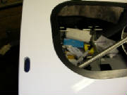
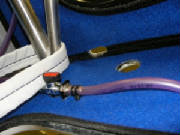
After studying the photographs in the kit manual, I concluded
that the suspension lines that attach the chute to the aircraft penetrate the roof of the cockpit at the outer edge of the
cabin roof, just forward of the rear wing attach tube structure. I drilled one hole from the inside at that point, then
by trial and error determined that a hole 12mm x 35mm was needed to permit the suspension line to be pulled through.
I cut these holes on each side, using drill bits and my rotary tool, and cut through the cabin lining material with my soldering
iron. I then looped the two suspension lines around the steel tubes as shown in the manual, and passed the ends through
the exit holes onto the roof of the cabin.
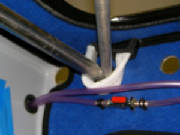
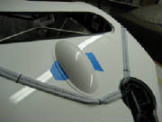
I taped the flaperon control cover in place temporarily to determine
the routing path for the suspension lines. I then secured the left suspension line just aft of the cover with a zip
tie as shown in the kit manual.
I ground away some excess flox around the lip of the chute exit hole so that the
cover would fit flush. I then lifted the chute assembly onto the top of the plane, and passed the deployment lanyard
down through the rocket mounting tube into the aft of the plane. I had to open up a couple of the holes in the rocket
mounting plate to match the rocket assembly, then I bolted the rocket to the side of the tube with Loctite on the bolts.
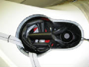
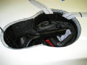
Then I dropped the chute through the opening into its mounting
tube. I connected the two suspension lines to the single chute suspension line with the supplied caribiner, using Loctite
on the carabiner threads.
I looped the suspension
lines together as neatly as possible and wrapped them with a zip tie. I placed them on top of the chute and taped the
suspension lines to the side of the chute container as shown in the kit manual. I then arranged the extraction lines
on top of it all, which pretty well filled up all the space in the chute container. The kit manual says to pack the
chute in place with spare foam, but everying fits snugly, so that doesn't seem necessary.
I then secured the suspension lines to the top of the cabin with two additional zip ties as shown in the kit manual.
There are two plastic-coated cables attached to a bent pin that
sticks up from the rocket assembly. This doesn't show in either the kit manual or the Galaxy manual that came with
the chute, so I sent an email to Tomaz for clarification.
March 31, 2007 3.0 hours - Continue rescue chute
installation
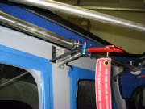
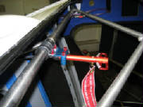
I passed the deployment lanyard and handle around the back
side of the chute container and through the aft cockpit bulkhead, which required removing the handle mounting bracket temporarily,
then reinstalling it. I mounted the handle to the overhead wing attach structure with hose clamps as shown in the kit
manual, using Loctite on the nuts.
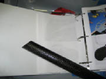
By cutting a bit at a time and trial fitting, I determined the angle for the bottom of the carbon rocket
exhaust tube where it intersects the bottom of the fuselage. This tube fits around the exhaust end of the rocket and
directs the exhaust gases out the bottom of the fuselage when you pull the lanyard.
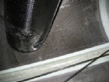
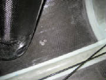
I drew around the bottom of the tube, then cut three holes within
the outline for location of the tube and later opening it up from the bottom of the fuselage.
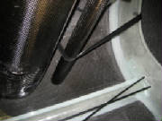
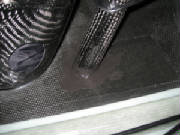
I secured the tube between the bottom of the rocket and the
bottom of the fuselage temporarily with tape, and sealed the bottom of the tube to the fuselage with silicone caulk.
I then taped the lanyard housing to the side of the fuselage to keep it out of the way and prevent it from flopping around
in flight.
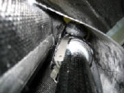
This picture looks up at the top of the exhaust tube.
The metal straps to the left will be riveted to the tube after the silicone cures.
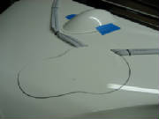
I cut away the edge of the chute cover plate in two places
to clear the suspension lines. The cover plate is not yet sealed with silicone. I will wait to seal everything
with silicone until I get an answer to my questions from Tomaz.
April 3, 2007 2.5 hours - Complete installation
of ballistic recovery chute
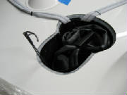
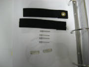
These two photos show things that required clarification.
The rocket assembly has a pair of plastic-coated cables attached to a curved pin and standing up from the top of the rocket.
There are also two fabric straps, two short metal straps and four rivets that aren't discussed in the manual.
The photos from Tomaz show that the straps are used to secure the chute, and the pin holds the straps together over the chute.
The metal straps are riveted over the ends of the fabric straps to attach them to the walls of the parachute container.
When the rocket is fired, it pulls the pin to free the chute for extraction.
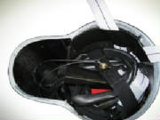
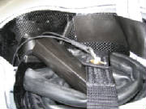
By referencing the photos, I copied the installation.
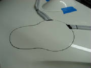
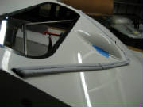
I then attached the chute cover with black silicone and sealed the openings in the cockpit roof with silicone.
I also put silicone under the suspension straps on top of the fuselage to keep them from vibrating in flight. The kit
includes a neutral silicone product that will not chemically degrade the suspension straps over time.
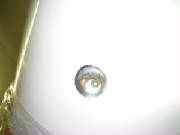
|
| Looking up through the rocket exhaust tube at the rocket nozzle |
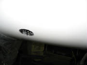
Finally, I opened up the rocket exhaust exit in the bottom of the plane using my rotary tool, starting
with the holes drilled earlier from the inside. I carefully enlarged the hole until it matched the carbon exhaust tube
where it is attached to the floor of the fuselage with silicone caulk.
Later I will apply a rocket exhaust warning
label and a red ring around the exhaust opening. These are included in the kit, but I'll do all the labeling and
decal application after everything else is complete.
|